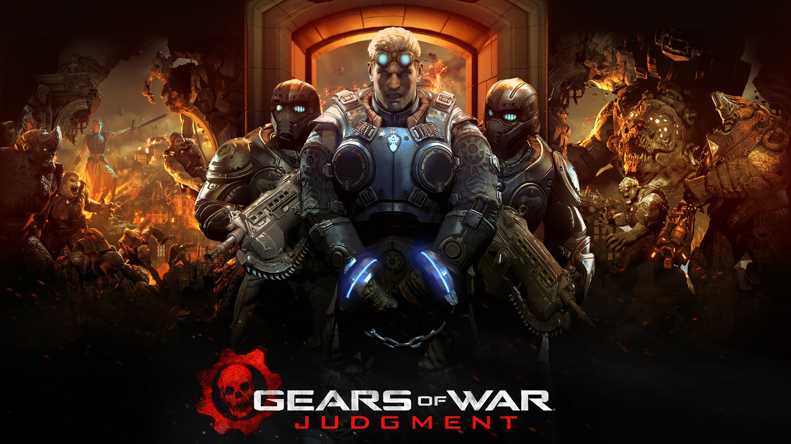
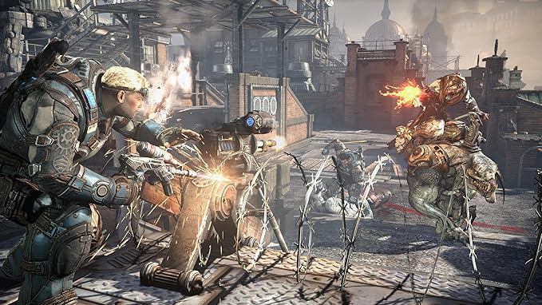
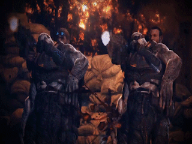
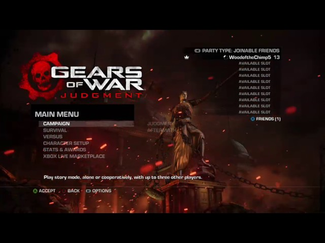

Gears of War Judgment
|
 |
 |
|
 |
 |
Desenvolvedora: Epic Games e People Can Fly
Plataforma: Xbox 360 (Retrocompatível com Xbox One e Series S/X)
Ano de Lançamento: 2013
Sinopse: Gears of War: Judgment é um prequel situado apenas alguns meses após o "Dia da Emergência". A história é contada através de flashbacks durante o julgamento militar do Esquadrão Kilo, liderado por Damon Baird e Augustus Cole.
Acusados de traição por desobedecerem ordens diretas para salvar a cidade de Halvo Bay, os membros do esquadrão narram suas batalhas contra o terrível General Karn. O jogo introduz o sistema de "Missões Desclassificadas", que altera a dificuldade e os objetivos, oferecendo uma perspectiva mais intensa e caótica do início da invasão Locust.